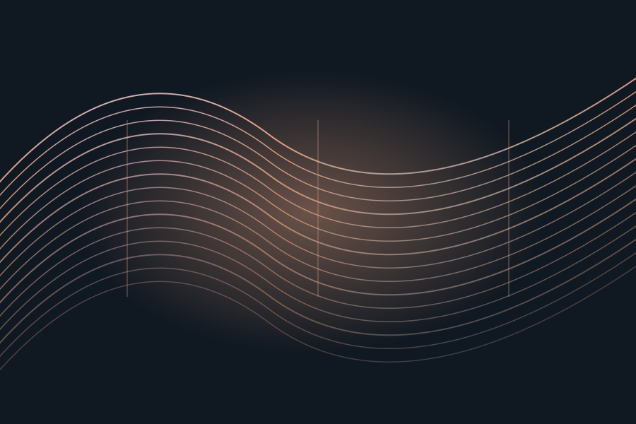
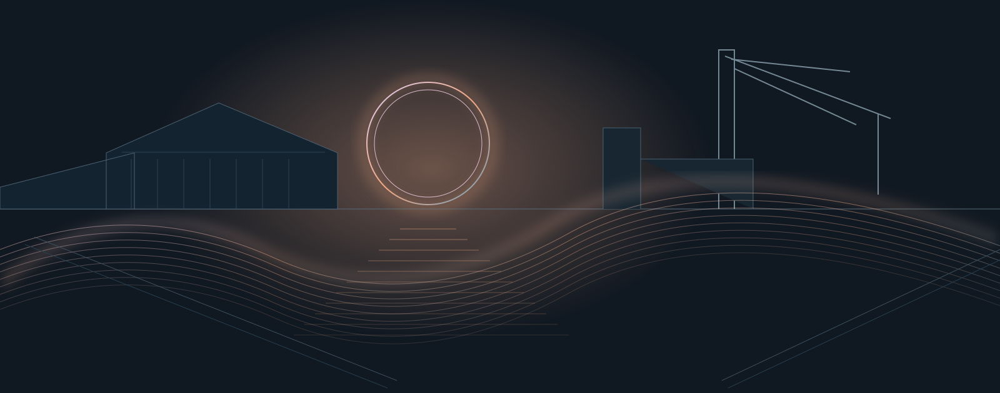
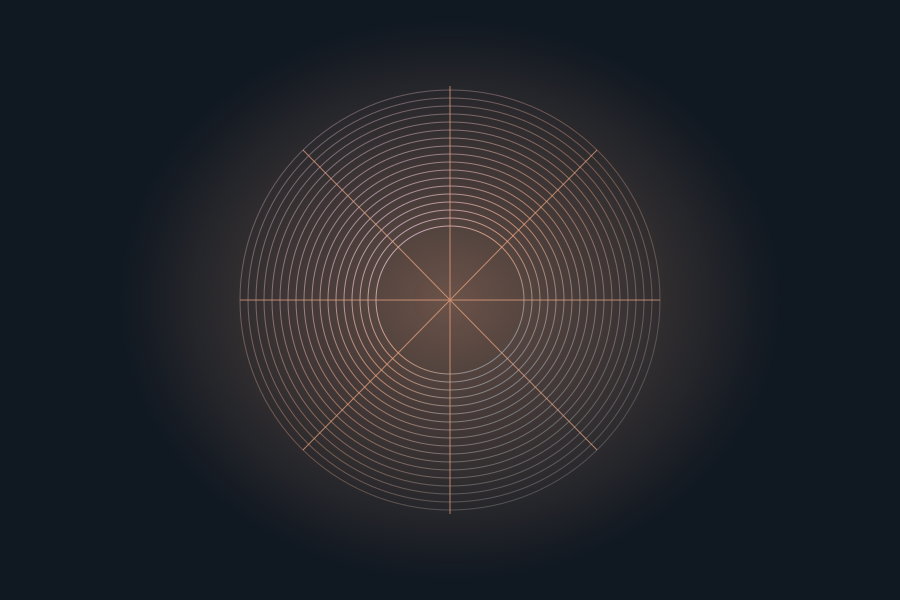
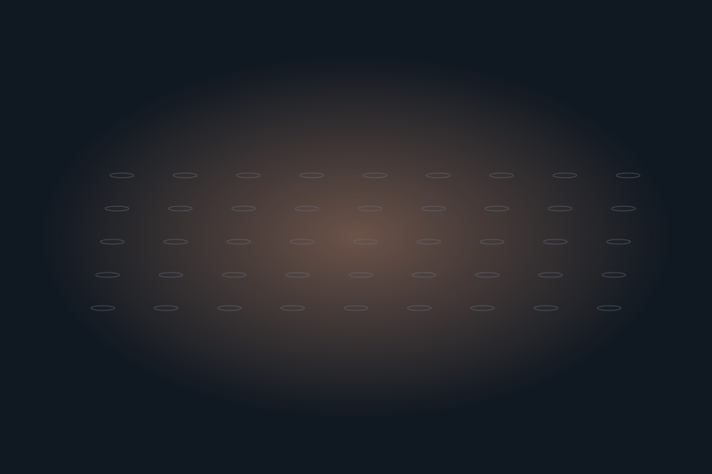
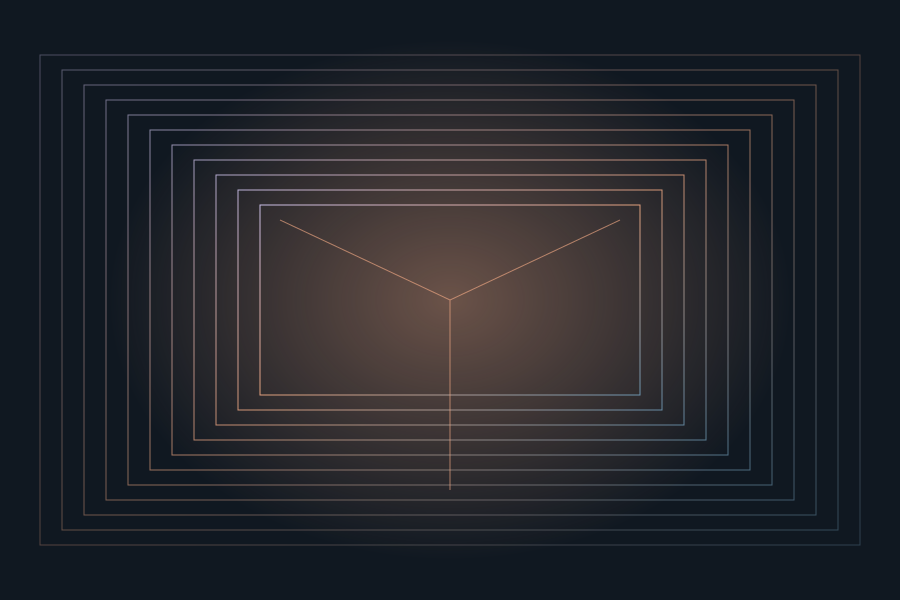
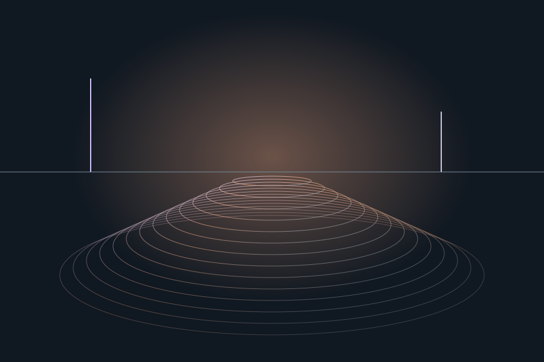
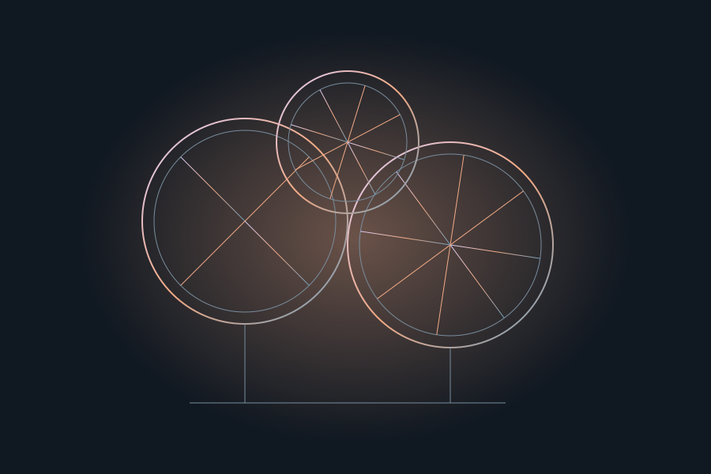

Low Tide Choir
Marin Vale
East Jetty · 25 min
Light, sound and an evening
by the water

19–21 March 2027Friday, Saturday & Sunday
18:00–23:00Each evening
Six installationsLight · sound · reflection
Before you comeFrom an outdoor sound walk to a room of moving forms. Take a closer look, then make an evening of it.

Marin Vale
East Jetty · 25 min

Éloïse Chen
Warehouse 2 · 18 min

Noor Okafor
Crane Court · 12 min

Ada Sørensen
Pump House · 20 min

Tomás Reyes
North Basin · 15 min

Jun Park
Workshop 4 · 30 min
Choose an evening and keep the works you want to see together. Your plan adds up the installation estimates, with their places and access notes ready to take with you.
Make my evening plan